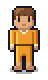
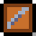
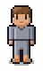
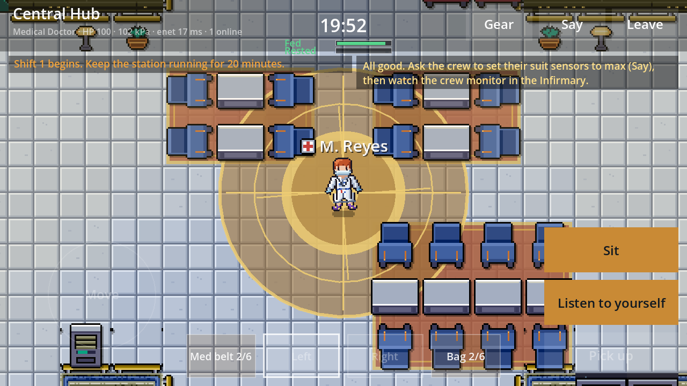
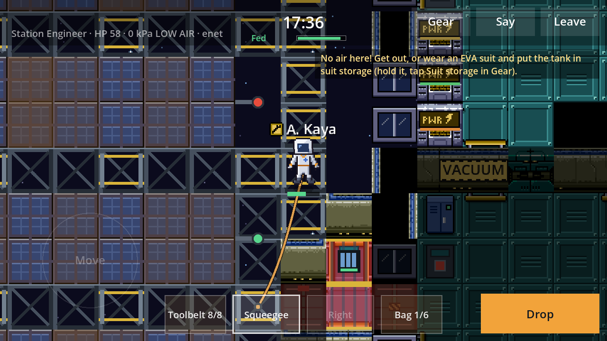
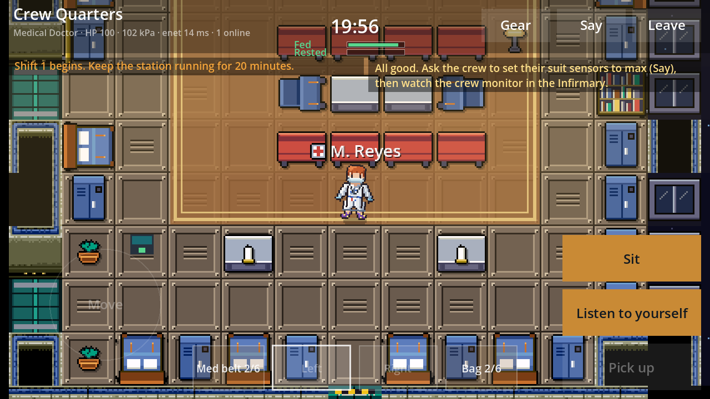

Station Shift
A short-shift station crew game for phones.
The ice went first, then the coast. Under the grey sea and above the cloud, the Tidal Directorate keeps a few sealed stations alive on ration cards and forms in triplicate, and somebody has to be aboard. You get one 25-minute shift: keep the air in, the water out and the paperwork stamped, with a crew who need you as much as you need them.
What is Station Shift
You are one of a handful of crew on a station out in space or under the sea. The hull wears thin, cables fail and the power plant ages, and nothing is fixed unless somebody walks over and fixes it. Everyone can do everything, but each job does its own work twice as fast, so the crew does best when it talks.
How to play
- Open the app, type a name and pick a job.
- Tap Ready (or Start now). With 4 people a short countdown starts the shift.
- Slide your left thumb to walk; tap the orange buttons on the right to act.
- Fix what breaks: patch the hull, mend cables, treat the injured, keep the power on. Talk on the radio.
- When the time is up the crew votes to go on or to go home on the shuttle, and a summary shows how the station did.
The full rules are on How to play.
The jobs
 Station Master
Station Master Registrar
Registrar
 Watch Officer
Watch Officer
 Advocate
Advocate

Station Engineer
 Medical Doctor
Medical Doctor
 Scientist
Scientist
 Storekeeper
Storekeeper
 Botanist
Botanist Chef
Chef Bartender
Bartender
 Miner
Miner
 Caretaker
Caretaker Chaplain
Chaplain
Hand
The stations
Heron Station
The space station: solar arrays, a truss to walk, a shuttle home.
Millrace Station
The deep station: seven decks, one department each, from the bridge down to the seabed turbines.
Cairn Station
The polar station: two decks on the ice, warm rooms, a Windlock, and the cold outside.
What's new
- 0.63.0 container stacks, pen skins, lab coat and stethoscope, floors F1-F2, Battery and Inverter rooms
- 0.62.0 handcuffs and pulling people, Janitor puddles and bulbs, Miner and refinery, floors F0, tidy hub, smaller Bar and Kitchen, stars beyond the map edge
- 0.61.0 underwater U0-U1: Benthos Station, water in rooms, flooding and Drain
- 0.60.0 late join through the arrival shuttle, Ready only in the lobby, divided Captain's office, office paperwork (paper, fax, file cabinet)
- 0.59.0 crates and the cargo cart, cell property lockers and timers, one-way doors
- 0.58.0 Captain and HoP quarters, door lanes, panels in tunnels, L-shaped Atmospherics, harsher radiation from the warning, slower hunger, wrapped HUD text
- 0.57.0 eleven crops, plant care in Botanics, sixteen dishes
- 0.56.0 radiation belt event, tunnel doors open to everyone with an orange blink
Gallery










Where it stands
Station Shift is an early prototype, version 0.76.0. It is played in small tests, in person, on iPhones invited through TestFlight, with a game server on a computer in the same room. It is not in the App Store yet.
The world
The ice melted and the sea rose until the coast cities were charts and rumours. The grey sea that covers most of the Earth is called the Greywater, and the people who are left live in the sealed stations of the Tidal Directorate, a plain bureaucracy that issues ration cards, job assignments and the station law. The crew is aboard because someone has to be.
This wiki
Every page here except Home, Credits, Privacy and Support is made by the game itself, from the same rules, art and maps the game runs on, so it always describes version 0.76.0. See Credits for who made what.